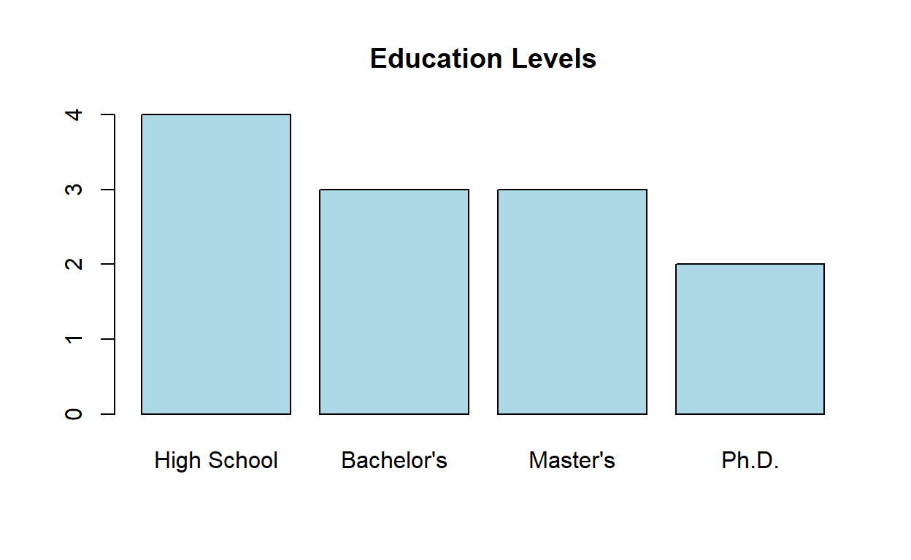
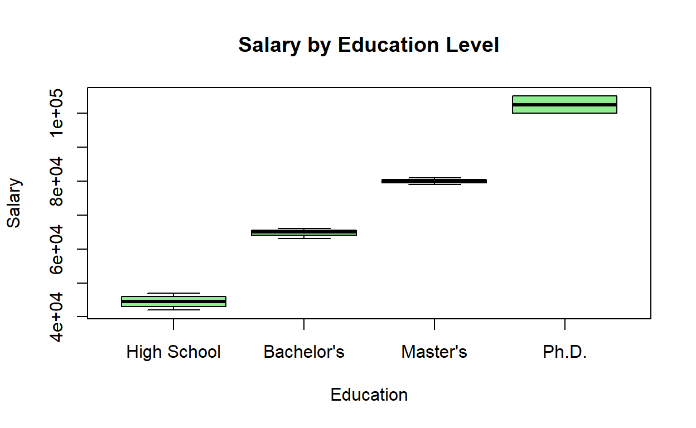

Introduction to Factors in R
Factors are a special data type in R used to represent categorical variables. They are useful for variables that have a fixed and known set of possible values, such as:
- Days of the week
- Months of the year
- Gender
- Blood types
- Rating scales (e.g., “low”, “medium”, “high”)
- Experimental conditions
Factors may look like character vectors, but they are actually integers under the hood, with each integer mapped to a label. This makes them more efficient to store and work with than character vectors.
Key characteristics of factors: 1. They store categorical data efficiently 2. They have predefined levels (possible values) 3. The levels can be ordered (ordinal) or unordered (nominal) 4. They enable proper handling of categorical variables in statistical models and plots
Let’s explore how to create, manipulate, and work with factors in R!
Creating Factors
Factors can be created using the factor() function.
Basic Factor Creation
# Create a character vector
days <- c("Mon", "Tue", "Wed", "Tue", "Mon", "Fri", "Wed")
# Convert to a factor
days_factor <- factor(days)
days_factor## [1] Mon Tue Wed Tue Mon Fri Wed
## Levels: Fri Mon Tue Wed# Check the structure
str(days_factor)## Factor w/ 4 levels "Fri","Mon","Tue",..: 2 3 4 3 2 1 4# Get the levels
levels(days_factor)## [1] "Fri" "Mon" "Tue" "Wed"Specifying Custom Levels
You can specify the levels of a factor, including levels that don’t yet exist in the data.
# Create a factor with specified levels
blood_types <- c("AB", "A", "O", "B", "A", "AB")
blood_factor <- factor(blood_types, levels = c("O", "A", "B", "AB"))
blood_factor## [1] AB A O B A AB
## Levels: O A B AB# Check the levels
levels(blood_factor)## [1] "O" "A" "B" "AB"# What happens with values not in the levels
status <- c("Low", "Medium", "High", "Medium", "Unknown")
status_factor <- factor(status, levels = c("Low", "Medium", "High"))
status_factor # "Unknown" becomes NA## [1] Low Medium High Medium <NA>
## Levels: Low Medium HighOrdered Factors
For categorical variables with a natural ordering, you can create ordered factors.
# Create an ordered factor
sizes <- c("Medium", "Large", "Small", "Small", "Medium", "Large")
sizes_ordered <- factor(sizes, levels = c("Small", "Medium", "Large"), ordered = TRUE)
sizes_ordered## [1] Medium Large Small Small Medium Large
## Levels: Small < Medium < Large# Check if it's ordered
is.ordered(sizes_ordered)## [1] TRUE# Comparison operations work with ordered factors
sizes_ordered[1] > sizes_ordered[3] # Medium > Small## [1] TRUEsizes_ordered[1] < sizes_ordered[2] # Medium < Large## [1] TRUEExercise 1: Creating Factors
Create the following factors:
A basic factor called
weekdays_factorfrom this vector:c("Monday", "Tuesday", "Wednesday", "Thursday", "Friday", "Monday", "Wednesday")A factor called
ratings_factorwith specified levels from this vector:c("Good", "Excellent", "Poor", "Good", "Fair", "Excellent")Use the levels in ascending order: “Poor”, “Fair”, “Good”, “Excellent”An ordered factor called
education_levelfrom this vector:c("Bachelor's", "High School", "Master's", "Ph.D.", "High School", "Bachelor's")with levels in this order: “High School”, “Bachelor’s”, “Master’s”, “Ph.D.”
# Write your code here# 1. Basic factor
weekdays <- c("Monday", "Tuesday", "Wednesday", "Thursday", "Friday", "Monday", "Wednesday")
weekdays_factor <- factor(weekdays)
# 2. Factor with specified levels
ratings <- c("Good", "Excellent", "Poor", "Good", "Fair", "Excellent")
ratings_factor <- factor(ratings, levels = c("Poor", "Fair", "Good", "Excellent"))
# 3. Ordered factor
education <- c("Bachelor's", "High School", "Master's", "Ph.D.", "High School", "Bachelor's")
education_level <- factor(education, levels = c("High School", "Bachelor's", "Master's", "Ph.D."), ordered = TRUE)
# Display the factors
weekdays_factor
ratings_factor
education_level
## Working with Factor Levels
Once a factor is created, you can work with its levels in various ways:
### Accessing and Modifying Levels
``` r
# Create a factor
colors <- factor(c("Red", "Blue", "Green", "Red", "Yellow", "Blue"))
# Get levels
levels(colors)## [1] "Blue" "Green" "Red" "Yellow"# Change level names
levels(colors) <- c("Rouge", "Bleu", "Vert", "Jaune")
colors## [1] Vert Rouge Bleu Vert Jaune Rouge
## Levels: Rouge Bleu Vert Jaune# Change specific level
levels(colors)[levels(colors) == "Rouge"] <- "Red"
colors## [1] Vert Red Bleu Vert Jaune Red
## Levels: Red Bleu Vert JauneRecoding Factor Levels
# Create a factor
responses <- factor(c(1, 2, 3, 3, 1, 2, 3, 2, 1))
# Recode with descriptive labels
levels(responses) <- c("Disagree", "Neutral", "Agree")
responses## [1] Disagree Neutral Agree Agree Disagree Neutral Agree Neutral
## [9] Disagree
## Levels: Disagree Neutral AgreeCombining Levels
# Create a factor
income <- factor(c("Low", "Medium", "High", "Medium", "Low", "Very High", "Medium"))
# Combine "High" and "Very High" into one level
levels(income)[levels(income) %in% c("High", "Very High")] <- "High+"
income## [1] Low Medium High+ Medium Low High+ Medium
## Levels: High+ Low MediumExercise 2: Working with Factor Levels
Start with this factor:
survey_responses <- factor(c("Strongly Agree", "Agree", "Neutral", "Disagree",
"Strongly Disagree", "Neutral", "Agree", "Strongly Agree",
"Disagree", "Neutral"))Complete the following tasks: 1. Display the levels of the factor 2. Change the levels to be in logical order: “Strongly Disagree”, “Disagree”, “Neutral”, “Agree”, “Strongly Agree” 3. Simplify the factor by combining “Strongly Agree” and “Agree” into “Positive”, and “Strongly Disagree” and “Disagree” into “Negative”, leaving “Neutral” as is 4. Count the frequency of each level in the simplified factor
# Create the survey_responses factor
survey_responses <- factor(c("Strongly Agree", "Agree", "Neutral", "Disagree",
"Strongly Disagree", "Neutral", "Agree", "Strongly Agree",
"Disagree", "Neutral"))
# Write your code here# Create the survey_responses factor
survey_responses <- factor(c("Strongly Agree", "Agree", "Neutral", "Disagree",
"Strongly Disagree", "Neutral", "Agree", "Strongly Agree",
"Disagree", "Neutral"))
# 1. Display the levels
original_levels <- levels(survey_responses)
original_levels
# 2. Change the order of levels
survey_responses <- factor(survey_responses,
levels = c("Strongly Disagree", "Disagree", "Neutral", "Agree", "Strongly Agree"))
# Display the reordered factor
survey_responses
# 3. Simplify by combining levels
simplified_responses <- survey_responses # Make a copy
levels(simplified_responses) <- c("Negative", "Negative", "Neutral", "Positive", "Positive")
# Display the simplified factor
simplified_responses
# 4. Count frequency of each level
response_counts <- table(simplified_responses)
response_countsConverting Between Factors and Other Types
You can convert factors to and from other data types:
Converting Factors to Other Types
# Create a factor
ratings <- factor(c("Low", "Medium", "High", "Medium", "Low", "High"))
# Convert factor to character
ratings_char <- as.character(ratings)
ratings_char## [1] "Low" "Medium" "High" "Medium" "Low" "High"# Convert factor to numeric (returns the internal integer codes)
# Note: This is usually not what you want
ratings_num <- as.numeric(ratings)
ratings_num## [1] 2 3 1 3 2 1# To convert to meaningful numbers, convert to character first
# Then to numeric (only if the levels are numeric strings)
num_factor <- factor(c("10", "20", "30", "20", "10"))
as.numeric(as.character(num_factor))## [1] 10 20 30 20 10Converting Other Types to Factors
# Character vector to factor
days <- c("Mon", "Tue", "Wed", "Thu", "Fri")
days_factor <- as.factor(days)
days_factor## [1] Mon Tue Wed Thu Fri
## Levels: Fri Mon Thu Tue Wed# Numeric vector to factor
codes <- c(1, 2, 3, 2, 1, 3, 2)
codes_factor <- as.factor(codes)
codes_factor## [1] 1 2 3 2 1 3 2
## Levels: 1 2 3Exercise 3: Converting Between Factors and Other Types
Complete the following tasks: 1. Create a factor
temp_factor from this character vector:
c("Cold", "Hot", "Cold", "Warm", "Hot", "Cold", "Warm")
Convert
temp_factorto a character vector calledtemp_charCreate a factor
score_factorfrom this numeric vector:c(1, 2, 3, 1, 3, 2, 1, 2)Assign descriptive labels to
score_factor: 1=“Low”, 2=“Medium”, 3=“High” Store the result aslabeled_scoresCreate a factor from this character vector of numeric strings:
c("10", "20", "30", "20", "10", "30")Then convert it to an actual numeric vector and store asnumeric_values
# Write your code here# 1. Create temperature factor
temp_factor <- factor(c("Cold", "Hot", "Cold", "Warm", "Hot", "Cold", "Warm"))
# 2. Convert to character
temp_char <- as.character(temp_factor)
# 3. Create score factor from numeric vector
score_factor <- factor(c(1, 2, 3, 1, 3, 2, 1, 2))
# 4. Assign descriptive labels
labeled_scores <- score_factor
levels(labeled_scores) <- c("Low", "Medium", "High")
# 5. Convert numeric strings
numeric_strings <- factor(c("10", "20", "30", "20", "10", "30"))
numeric_values <- as.numeric(as.character(numeric_strings))
# Display results
temp_factor
temp_char
score_factor
labeled_scores
numeric_valuesFactors in Data Analysis
Factors are particularly useful in data analysis for:
Tabulation and Summarization
# Create a factor
gender <- factor(c("Male", "Female", "Female", "Male", "Male", "Female", "Female", "Male"))
# Tabulate frequencies
table(gender)## gender
## Female Male
## 4 4# Cross-tabulation
treatment <- factor(c("A", "A", "B", "B", "A", "B", "A", "B"))
table(gender, treatment)## treatment
## gender A B
## Female 2 2
## Male 2 2# Proportions
prop.table(table(gender))## gender
## Female Male
## 0.5 0.5prop.table(table(gender, treatment)) # Joint proportions## treatment
## gender A B
## Female 0.25 0.25
## Male 0.25 0.25prop.table(table(gender, treatment), 1) # Row proportions## treatment
## gender A B
## Female 0.5 0.5
## Male 0.5 0.5prop.table(table(gender, treatment), 2) # Column proportions## treatment
## gender A B
## Female 0.5 0.5
## Male 0.5 0.5Plotting with Factors
# Create some example data
education <- factor(c("High School", "Bachelor's", "Master's", "Ph.D.",
"High School", "Bachelor's", "Master's", "High School",
"Bachelor's", "Master's", "Ph.D.", "High School"),
levels = c("High School", "Bachelor's", "Master's", "Ph.D."),
ordered = TRUE)
salary <- c(45000, 65000, 80000, 100000, 42000, 63000, 81000, 47000, 66000, 79000, 105000, 44000)
# Bar plot of education frequencies
barplot(table(education), col = "lightblue", main = "Education Levels")
# Boxplot of salary by education
plot(education, salary, col = "lightgreen", main = "Salary by Education Level",
xlab = "Education", ylab = "Salary")
Exercise 4: Working with Factors in Data Analysis
Use the following data about customer satisfaction ratings at a restaurant:
ratings <- factor(c("Excellent", "Good", "Fair", "Poor", "Good", "Excellent",
"Good", "Fair", "Excellent", "Good", "Poor", "Fair",
"Good", "Excellent", "Excellent", "Good", "Fair", "Poor"),
levels = c("Poor", "Fair", "Good", "Excellent"),
ordered = TRUE)
expenditure <- c(45, 32, 18, 15, 30, 50, 27, 20, 55, 34, 12, 22, 28, 48, 52, 35, 21, 14)Complete the following tasks: 1. Create a frequency table of the
ratings and store as rating_freq 2. Calculate the
percentage of each rating and store as rating_pct 3. Create
a data frame called rating_data with the ratings and
expenditure 4. Calculate the average expenditure for each rating level
and store as avg_by_rating 5. Create a barplot of the
rating frequencies
# Create the ratings factor and expenditure vector
ratings <- factor(c("Excellent", "Good", "Fair", "Poor", "Good", "Excellent",
"Good", "Fair", "Excellent", "Good", "Poor", "Fair",
"Good", "Excellent", "Excellent", "Good", "Fair", "Poor"),
levels = c("Poor", "Fair", "Good", "Excellent"),
ordered = TRUE)
expenditure <- c(45, 32, 18, 15, 30, 50, 27, 20, 55, 34, 12, 22, 28, 48, 52, 35, 21, 14)
# Write your code here# Create the ratings factor and expenditure vector
ratings <- factor(c("Excellent", "Good", "Fair", "Poor", "Good", "Excellent",
"Good", "Fair", "Excellent", "Good", "Poor", "Fair",
"Good", "Excellent", "Excellent", "Good", "Fair", "Poor"),
levels = c("Poor", "Fair", "Good", "Excellent"),
ordered = TRUE)
expenditure <- c(45, 32, 18, 15, 30, 50, 27, 20, 55, 34, 12, 22, 28, 48, 52, 35, 21, 14)
# 1. Create a frequency table
rating_freq <- table(ratings)
# 2. Calculate percentages
rating_pct <- prop.table(rating_freq) * 100
# 3. Create a data frame
rating_data <- data.frame(Rating = ratings, Expenditure = expenditure)
# 4. Calculate average expenditure by rating
avg_by_rating <- aggregate(Expenditure ~ Rating, data = rating_data, FUN = mean)
# 5. Create a barplot
barplot(rating_freq, col = c("red", "orange", "green", "blue"),
main = "Distribution of Customer Ratings",
xlab = "Rating", ylab = "Frequency")
# Display results
rating_freq
rating_pct
rating_data
avg_by_ratingFactors in Statistical Modeling
Factors are particularly important for statistical modeling in R.
Model Building with Factors
In statistical models, factors are automatically handled differently from numeric variables: - Factors with two levels are typically converted to 0/1 dummy variables - Factors with more than two levels are converted to a set of dummy variables
# Create a simple dataset
set.seed(123) # For reproducibility
treatment <- factor(rep(c("Control", "Drug A", "Drug B"), each = 10))
age <- sample(30:70, 30, replace = TRUE)
response <- rnorm(30, mean = c(5, 7, 9)[as.numeric(treatment)], sd = 1.5) + age/10
# Build a linear model
model <- lm(response ~ treatment + age)
# View the model summary
summary(model)##
## Call:
## lm(formula = response ~ treatment + age)
##
## Residuals:
## Min 1Q Median 3Q Max
## -4.3253 -0.9197 0.1562 0.9060 2.1860
##
## Coefficients:
## Estimate Std. Error t value Pr(>|t|)
## (Intercept) 5.08041 1.33926 3.793 0.000799 ***
## treatmentDrug A 2.00342 0.69722 2.873 0.007985 **
## treatmentDrug B 4.66115 0.70015 6.657 4.62e-07 ***
## age 0.08966 0.02557 3.507 0.001668 **
## ---
## Signif. codes: 0 '***' 0.001 '**' 0.01 '*' 0.05 '.' 0.1 ' ' 1
##
## Residual standard error: 1.559 on 26 degrees of freedom
## Multiple R-squared: 0.7043, Adjusted R-squared: 0.6702
## F-statistic: 20.64 on 3 and 26 DF, p-value: 4.713e-07Exercise 5: Factors in Statistical Modeling
Use this simulated dataset about plant growth under different conditions:
# Generate data
set.seed(456)
fertilizer <- factor(rep(c("None", "Type A", "Type B"), each = 15))
sunshine <- factor(rep(c("Low", "Medium", "High"), times = 15))
water <- sample(5:15, 45, replace = TRUE)
growth <- 2 + 0.5 * water +
rnorm(45, mean = c(0, 2, 3)[as.numeric(fertilizer)], sd = 1) +
rnorm(45, mean = c(0, 1, 2)[as.numeric(sunshine)], sd = 0.5)Complete the following tasks: 1. Create a data frame called
plant_data with all variables 2. Check the structure of the
data frame to verify factors are correctly recognized 3. Calculate the
average growth by fertilizer type and save as
growth_by_fertilizer 4. Calculate the average growth by
sunshine level and save as growth_by_sunshine 5. Build a
linear model that predicts growth based on
fertilizer, sunshine, and water,
and save as plant_model
# Generate data
set.seed(456)
fertilizer <- factor(rep(c("None", "Type A", "Type B"), each = 15))
sunshine <- factor(rep(c("Low", "Medium", "High"), times = 15))
water <- sample(5:15, 45, replace = TRUE)
growth <- 2 + 0.5 * water +
rnorm(45, mean = c(0, 2, 3)[as.numeric(fertilizer)], sd = 1) +
rnorm(45, mean = c(0, 1, 2)[as.numeric(sunshine)], sd = 0.5)
# Write your code here# Generate data
set.seed(456)
fertilizer <- factor(rep(c("None", "Type A", "Type B"), each = 15))
sunshine <- factor(rep(c("Low", "Medium", "High"), times = 15))
water <- sample(5:15, 45, replace = TRUE)
growth <- 2 + 0.5 * water +
rnorm(45, mean = c(0, 2, 3)[as.numeric(fertilizer)], sd = 1) +
rnorm(45, mean = c(0, 1, 2)[as.numeric(sunshine)], sd = 0.5)
# 1. Create a data frame
plant_data <- data.frame(
Fertilizer = fertilizer,
Sunshine = sunshine,
Water = water,
Growth = growth
)
# 2. Check the structure
str(plant_data)
# 3. Calculate average growth by fertilizer type
growth_by_fertilizer <- aggregate(Growth ~ Fertilizer, data = plant_data, FUN = mean)
# 4. Calculate average growth by sunshine level
growth_by_sunshine <- aggregate(Growth ~ Sunshine, data = plant_data, FUN = mean)
# 5. Build a linear model
plant_model <- lm(Growth ~ Fertilizer + Sunshine + Water, data = plant_data)
# Display results
plant_data
growth_by_fertilizer
growth_by_sunshine
summary(plant_model)Summary
In this module, you’ve learned about factors in R, including:
- Creating factors using the
factor()function with specified levels and ordering - Working with factor levels by accessing, modifying, and combining them
- Converting between factors and other data types such as character and numeric
- Using factors for data analysis through tabulation, summarization, and visualization
- Applying factors in statistical modeling to represent categorical variables
Factors are essential for proper handling of categorical data in R. They ensure that categories are correctly represented in analyses, visualizations, and statistical models, which is crucial for accurate data interpretation and decision-making.
This concludes our tutorial on basic data structures in R. You’ve now learned about the environment, variables, data types, vectors, matrices, lists, data frames, and factors—all the fundamental building blocks you need for effective data analysis in R!